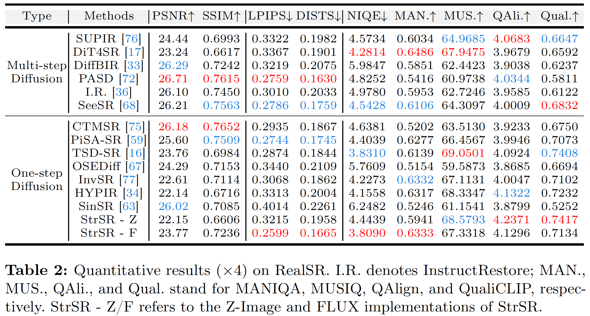
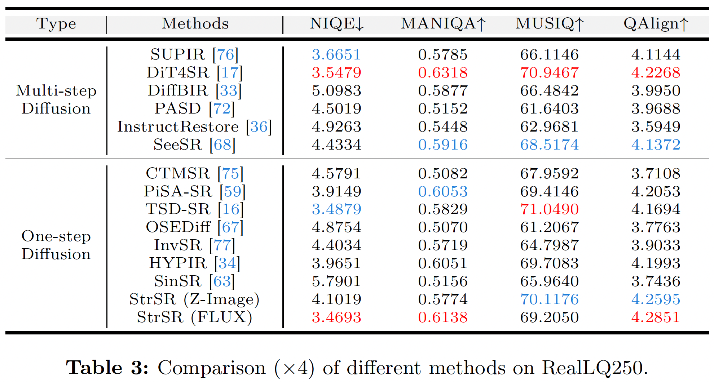

Quantitative Comparisons
- Results in Table 1 on synthetic dataset (DIV2K-Val) from the main paper.

- Results in Table 2 on real-world dataset (RealSR) from the main paper.

- Results in Table 3 on real-world dataset (RealLQ250) from the main paper.

Visual Comparisons
- Results in Figure 7 on synthetic dataset (DIV2K-Val) from the main paper.

- Results in Figure 8 on real-world dataset (RealSR) from the main paper.

- Results in Figure 9 on real-world dataset (RealLQ250) from the main paper.